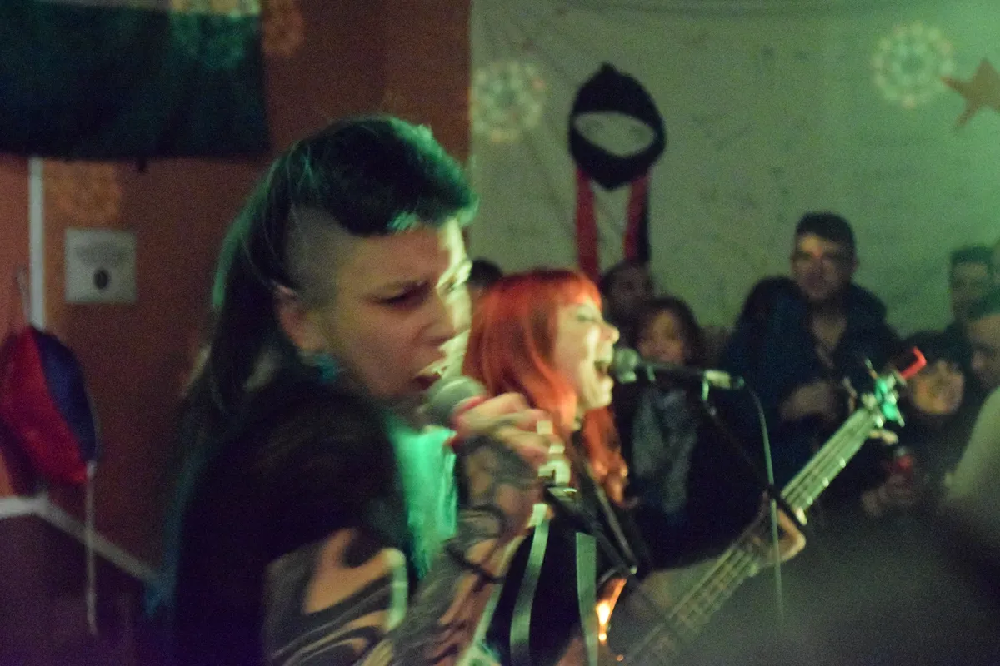
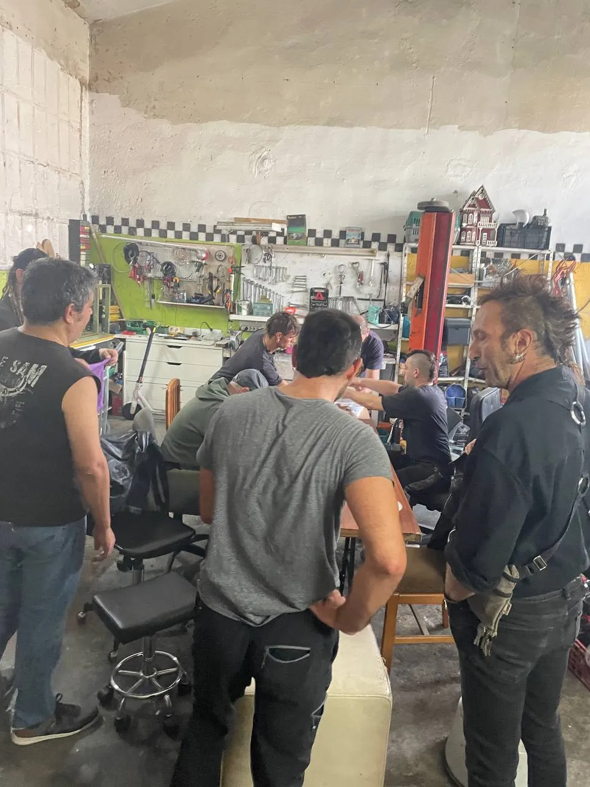
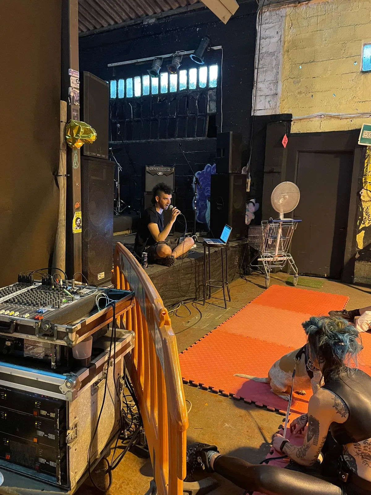
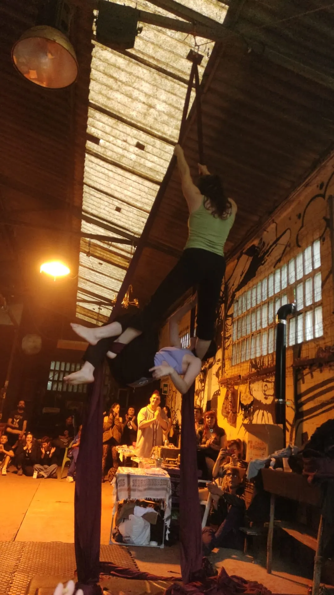
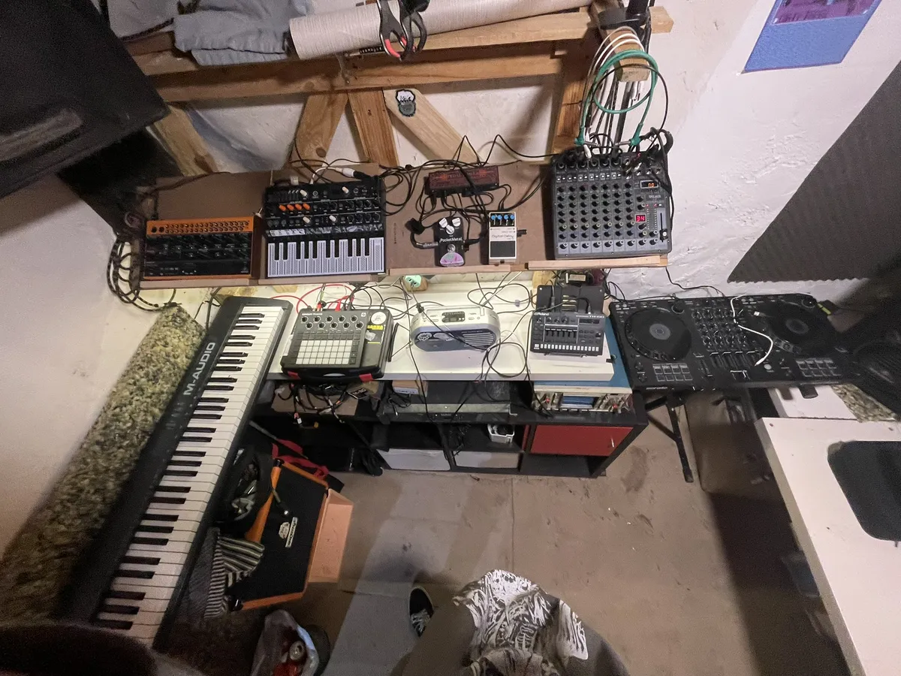
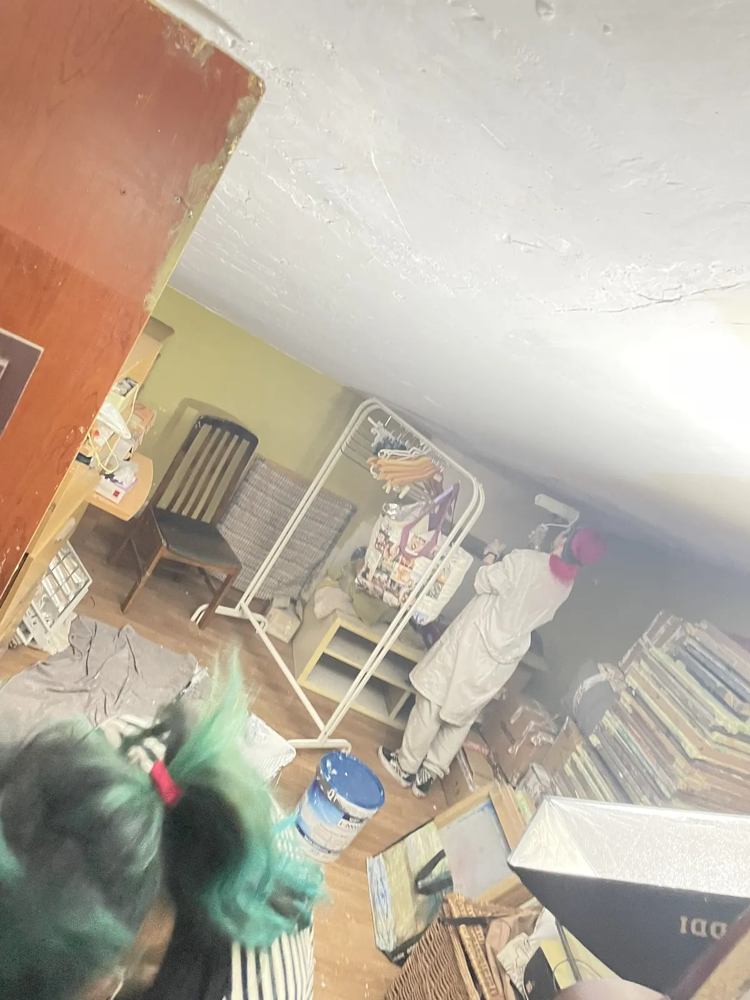
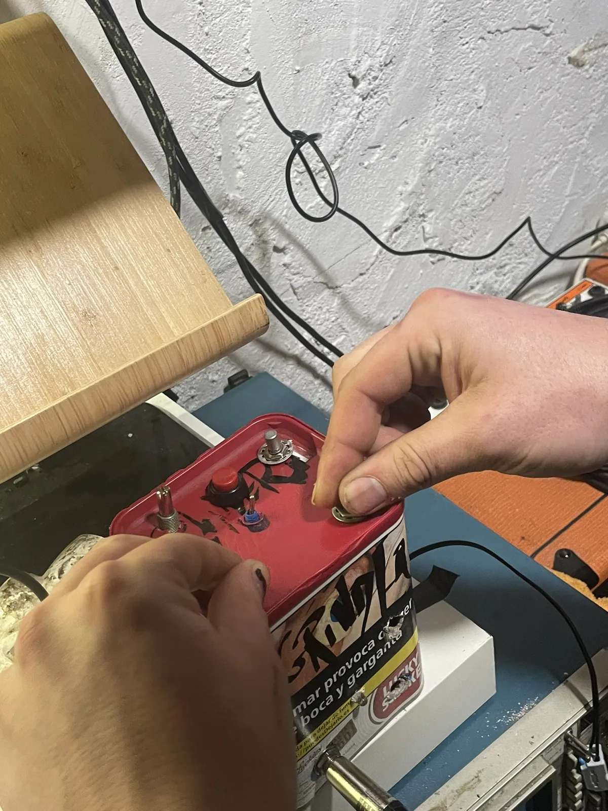
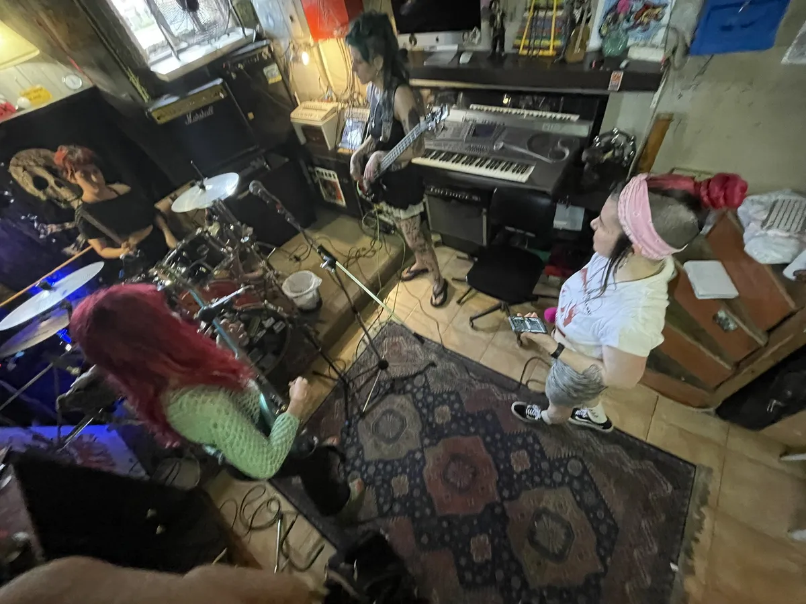
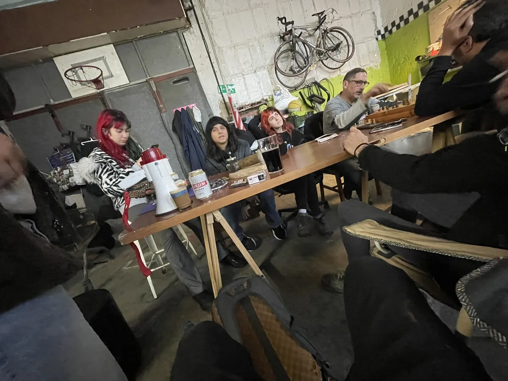

Perrafest
120-180 participantesEncuentro intergeneracional queer comunitario. Talleres, acciones artisticas, convivencia y programacion abierta.
Bilbao, Euskadi
Encuentros

Encuentro intergeneracional queer comunitario. Talleres, acciones artisticas, convivencia y programacion abierta.

Participacion en las fiestas del barrio. Cultura, colaboracion vecinal y presencia comunitaria en Olabeaga.

Dispositivo experimental de apoyo mutuo artistico-cultural. Capsulas de comunicacion y cuidado entre iguales.

Red autonoma feminista de colaboracion cultural en Bizkaia. Intercambio, visibilizacion y apoyo entre iniciativas.
Talleres

Capacitacion tecnica y autonomia. Sonido, montaje, gestion de equipos. Democratizacion de saberes tecnicos.

Creacion grafica, aprendizaje compartido y produccion de materiales en talleres practicos abiertos.

Produccion, grabacion y creacion de dispositivos DIY. Experimentacion tecnica y creatividad aplicada a la musica.
Quienes somos


Kilker Etxea es un espacio comunitario de creacion, dinamizacion y experimentacion artistica y cultural en Bilbao. Desde un antiguo taller mecanico reconvertido en laboratorio de cultura, musicos, artistas plasticos y gente DIY trabajan juntos en un proyecto intergeneracional, inclusivo e interseccional. Uno de los pocos espacios de experimentacion artistica comunitaria de Euskadi.